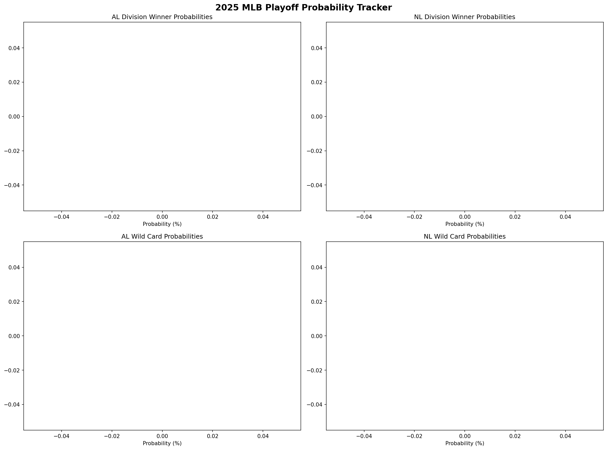
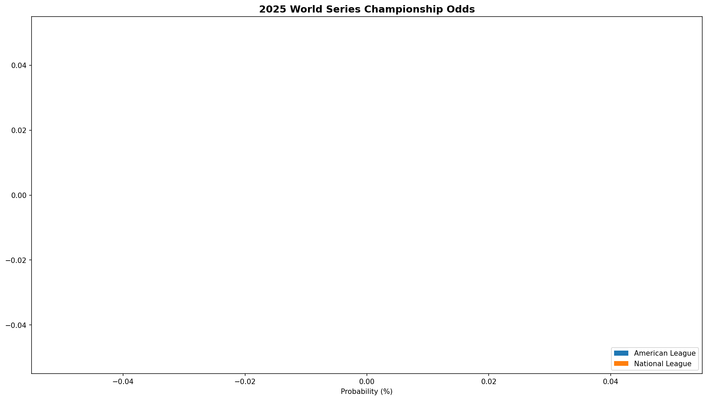

🎯 Playoff Picture Overview
📊 Latest Playoff Probabilities
Last Updated: Loading...
Based on: Current standings, projected wins, team strength, and remaining schedule
Loading playoff insights...
Division Winner & Wild Card Probabilities

🎟️ Wild Card Battles
Loading AL Wild Card race...
Loading NL Wild Card race...
💡 Wild Card Format
Each league awards 3 Wild Card spots to the best non-division winners. The Wild Card round features:
- Wild Card #1: Gets a bye, automatically advances to Division Series
- Wild Card #2 vs #3: Best-of-3 series to advance to Division Series
- All games played at higher seed's home stadium
🏆 World Series Championship Odds

Loading World Series favorites...
🎯 Championship Path
To win the World Series, teams must navigate:
- Wild Card Round: Best-of-3 (if not division winner or WC1)
- Division Series: Best-of-5
- Championship Series: Best-of-7 (ALCS/NLCS)
- World Series: Best-of-7
Playoff Prediction Accuracy Tracking
We save our playoff predictions daily throughout the season and compare them to actual playoff results.
- Division Winners: Accuracy of predicting each division champion
- Wild Card Teams: How well we predicted the 6 wild card teams
- World Series Winner: Whether we correctly predicted the champion
- Daily Tracking: Complete timeline of prediction changes
Tracking In Progress
Playoff results will be finalized in October 2025. Check back then for accuracy analysis!
Playoff Prediction Accuracy Dashboard
Once the 2025 playoffs conclude, this section will show:
- Division winner prediction accuracy for all 6 divisions
- Wild card team prediction success rates
- World Series champion prediction accuracy
- Timeline showing how predictions evolved throughout the season
- Analysis of which factors led to accurate/inaccurate predictions
🚀 Starting Playoff Prediction Tracking
The accuracy tracking system will begin collecting data once playoff predictions start running.
Expected features:
- Daily prediction snapshots
- Historical accuracy charts
- Prediction timeline visualization
- End-of-season performance analysis
Check back after the first few prediction updates to see accuracy data!
🔬 Playoff Prediction Methodology
Our playoff probabilities are calculated using a comprehensive model that considers multiple factors:
Team Strength Calculation
Current Record (70%)
Wins, losses, and winning percentage through current date
Projected Performance (30%)
Season-long projections based on current pace
Division Winner Probabilities
Strength Score (50%)
Overall team performance relative to division rivals
Current Lead (30%)
Games ahead/behind in division standings
Games Remaining (20%)
Time left to make up ground or extend lead
Wild Card Probabilities
League Ranking
Position among all teams in league standings
Projected Wins
Teams need ~85+ wins to compete for Wild Card
Competition Level
Number of teams competing for limited spots
World Series Odds
Overall Strength (60%)
Combined record and performance metrics
Playoff Position (25%)
Division winner vs Wild Card path difficulty
Historical Performance (15%)
Recent playoff experience and clutch performance